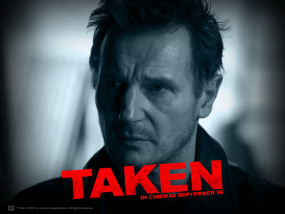

En realidad nunca he tenido una película favorita en especial, aunque si me gustan las películas de ciertos actores como Christian Bale, Leonardo Dicaprio o Liam Neeson, por lo que una de mis películas favoritas es Búsqueda Implacable.

Mi video musical favorito es de mi grupo favorito, Muse, esta canción es de su segundo álbum: Origin of Symmetry(2001) y la canción se llama
Bliss.
A la persona que más admiro es a Miroslav Klose, es un ex-jugador de la selección alemana de fútbol, así como jugador de la SS Lazio de Italia y ex-jugador del Bayern Múnich (mi equipo favorito), aparte es el mayor anotador de su selección y el mayor anotador en la historia de las copas del mundo con 16 goles. Aparte de eso siempre ha sido una persona de bajo perfil, nunca se ha visto involucrado en escándalos y siempre ha traido alegrías a todos los aficionados ya que para mí es el mejor delantero del mundo. Él es Miroslav Klose.